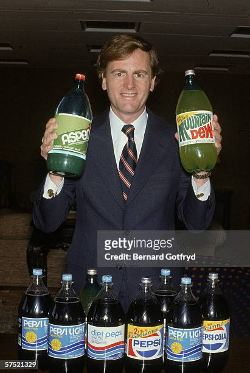
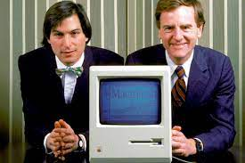
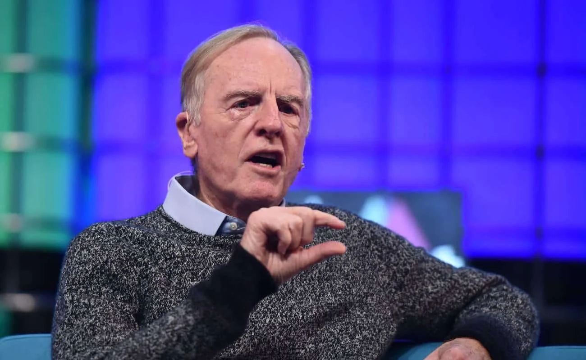

História de John Sculley e sua Trajetória No Mundo da Tecnologia
Biografia de John Sculley
Início da Vida e Educação: John Sculley nasceu em 6 de abril de 1939, em Nova York, EUA. Ele estudou na Universidade Brown e na Universidade da Pensilvânia, onde obteve um diploma em arquitetura e um MBA, respectivamente. Sua principal formação é de Design de arquitetura na Universidade Brown e MBA em Administração pela Universidade da Pensilvânia. John Sculley, é um executivo de sucesso é também um investidor em startups de alta tecnologia.
John Sculley e a Pepsi

O primeiro trabalho de Sculley foi em
1963, na
Marschalk Co. Em 1967, Sculley
entrou para o time da Pepsi como estagiário de um programa de treinamento.
Aos 30 anos, assumiu o cargo de vice-presidente de marketing da empresa
Pepsi-Cola e, posteriormente, como presidente da PepsiCo.
O executivo foi responsável por uma das primeiras pesquisas de consumo da empresa.
Era um teste de produtos em domicílio da qual participaram 350 famílias.
O resultado do trabalho foi o lançamento de novos produtos, de diferentes
tamanhos, pela companhia de bebida.
Em 1970, começou a guerra das colas, com a Pepsi investindo no marketing
para tentar destronar a Coca-Cola.
Ele foi responsável por uma campanha que ajudou a popularizar a Pepsi na época:
a Pepsi Challenge.
No ano de 1974, John Sculley foi promovido ao cargo de presidente da divisão
internacional de operações de alimentos da PepsiCo.
Ele foi responsável por uma reforma na área, que tinha como intuito diminuir
as perdas financeiras e melhorar a qualidade da receita e dos produtos.
John Sculley e a Apple

No ano de 1974, John Sculley
foi promovido ao cargo de presidente da divisão internacional de operações de
alimentos da PepsiCo.
Ele foi responsável por uma reforma na área, que tinha como intuito diminuir as
judou a estabelecer as vendas do Apple II e a lançar o Mac.
Contudo, dentro da Apple nem tudo foi fácil para John, ele sofreu uma tentativa
de boicote de Steve Jobs, mas os diretores ficaram ao lado de Sculley.
Sob sua liderança, as vendas da Apple aumentaram consideravelmente, passando de
US$ 982 milhões em 1983 para US$ 7,9 bilhões em 1993, ano em que saiu da empresa.
Vida de Jhon Sculley Após a Apple e Seus Trabalhos Filantrópicos
Trajetória de John Sculley e Sua Vida Pós Apple
O primeiro trabalho de Sculley foi em 1963, na Marschalk Co. Em 1967, entrou para o time da
Pepsi como estagiário de um programa de treinamento.
Aos 30 anos, assumiu o cargo de vice-presidente de marketing da empresa. Sculley se destacou como presidente da
Pepsi-Cola e, posteriormente, como presidente da PepsiCo.
O executivo foi responsável por uma das primeiras pesquisas de consumo da empresa. Era um teste de produtos em
domicílio da qual participaram 350 famílias.
O resultado do trabalho foi o lançamento de novos produtos, de diferentes tamanhos, pela companhia de bebida.
Em 1970, começou a guerra das colas, com a Pepsi investindo no marketing para tentar destronar a Coca-Cola.
Ele foi responsável por uma campanha que ajudou a popularizar a Pepsi na época: a Pepsi Challenge
No ano de 1974, John Sculley foi promovido ao cargo de presidente da divisão internacional de operações de
alimentos da PepsiCo.
Ele foi responsável por uma reforma na área, que tinha como intuito diminuir as perdas financeiras e melhorar a
qualidade da receita e dos produtos.
Em 1987, John Sculley deixou a Pepsi para assumir o cargo de CEO da Apple. Ele ajudou a estabelecer as vendas do
Apple II e a lançar o Mac.
Contudo, dentro da Apple nem tudo foi fácil para John, ele sofreu uma tentativa de boicote de Steve Jobs, mas os
diretores ficaram ao lado de Sculley.
Sob sua liderança, as vendas da Apple aumentaram consideravelmente, passando de US$ 982 milhões em 1983 para US$
7,9 bilhões em 1993, ano em que saiu da empresa.
Pós-Apple: Depois de deixar a Apple em 1993, Sculley esteve envolvido em várias empresas e investimentos,
incluindo a co-fundação da Data Beats, uma empresa de saúde.
A reveladora entrevista de John Sculley, ex-CEO da Apple, sobre os bastidores da empresa
 Pouco tempo após o
falecimento de Steve Jobs, John Sculley, concedeu uma entrevista na qual
abordou diversos temas, com destaque para o período em que ele esteve na Apple. Na ocasião, ele participou de
uma palestra no Brasil, e vamos listar aqui os pontos mais importantes da conversa.
Primeiramente, é inegável que uma entrevista com John Sculley não poderia deixar de abordar o conturbado
afastamento de Steve Jobs da Apple. Na ocasião, Sculley mencionou sua biografia autorizada (que inclusive
inspirou um filme), embora tenha admitido não tê-la lido. No entanto, com base no que lhe foi relatado, o livro
narra de forma verídica os acontecimentos que levaram ao afastamento de Steve Jobs pelo Conselho Administrativo
da empresa, devido aos resultados insatisfatórios durante meados da década de 80.
John Sculley pontuou que, se pudesse voltar atrás, teria feito diferente, tentando manter Steve na empresa que
havia fundado. Outra polêmica envolvendo John Sculley eram os resultados ruins da Apple serem atribuídos a ele.
Contudo, ele refutou tal alegação com um dado incontestável: durante seu período como CEO, a Apple registrou um
crescimento de 1000% entre 1983 e 1993.
Sobre o Vale do Silício, John Sculley destacou na entrevista que a cultura de lá encoraja o
risco. Em outras
palavras, tentar e errar até acertar é o lema, mesmo que isso tenha um custo elevado.
Empresas de outros
setores
costumam ser mais conservadoras nesse aspecto, procurando calcular ao máximo as consequências de decisões
equivocadas